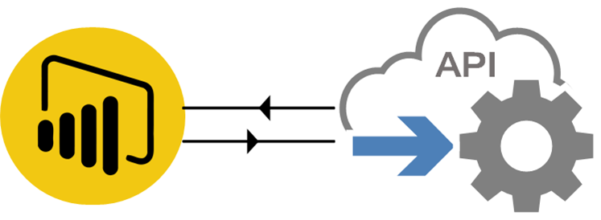

Creating a data strategy
NAB • Investment Banking • Markets and Treasury Finance
The starting situation
- No data strategy in place regarding the use of Business Intelligence
- Most of the internal reports (e.g. reconciliations spreadsheets, Profits and Loss, traders’ sign-off, etc.) were produced in Excel with extensive use of VLOOKUP-like formulas and outdated VBA macros.
- Some spreadsheets were also converted into PDFs and PPTs, annihilating any sort of data analysis.
- Nobody could really fully understand those macros. Some people were able to do some debugging, but no one was able to redevelop it from scratch.
- There were no centralised way of disseminating data throughout the finance department. People were relying on emails. People were receiving 100+ emails per day. Most of them were sent on a daily basis, with CSV or XLSX attached. Some only contained screenshots of Excel tables. The email was used as a one-size-fits-all solution.
What I did
- I requested the implementation of a Power BI Server, so that we could redevelop and automate reports. It would become the main point of entry/portal for all finance reportings.
- Emails should be used to disseminate relevant and important information. It should not be used as a log monitoring tool.
- In some cases, dedicated workflows had to be developed in Python (via Jupyter Notebook) before generating a proper visualisation in Power BI.
- Data governance also had to be enforced. Some of those reports were sent out to a large audience, which did not necessarily need access to it (leveraging groups in SailPoint).

Connecting to APIs with Power BI
The deliverable and the outcome
- Creation of state-of-the-art dashboards (e.g. Profit and Loss dashboard with drilling capabilities, allowing self-service analytics) for each and every team
- Implementation of fully automated dashboards (sourcing data from data lakes, data warehouses, APIs, etc. rather than manual mappings stored on shared drives)
- New SailPoint groups (Identity management tool) to limit access to certain Power BI folders and dashboards
- Development of data completeness dashboard (identifying when reports are ready for consumption, identifying bottlenecks in the data sourcing, etc.)
- Monitoring usage metrics in workspaces (identifying popular dashboards, features, etc.)
- The CFO, executive general managers and finance partners can now attend a meeting with a dynamic tool allowing them to deliver storytelling. They can answer questions on-the-fly by drilling into the visualisations.
Key takeaways
- Change management skills required: it takes time for people to adapt to new ways of doing things (even though the new tools may make a lot of sense on the paper)
- Upskilling/training sessions were required so that end-users could fully embrace the new BI solutions.